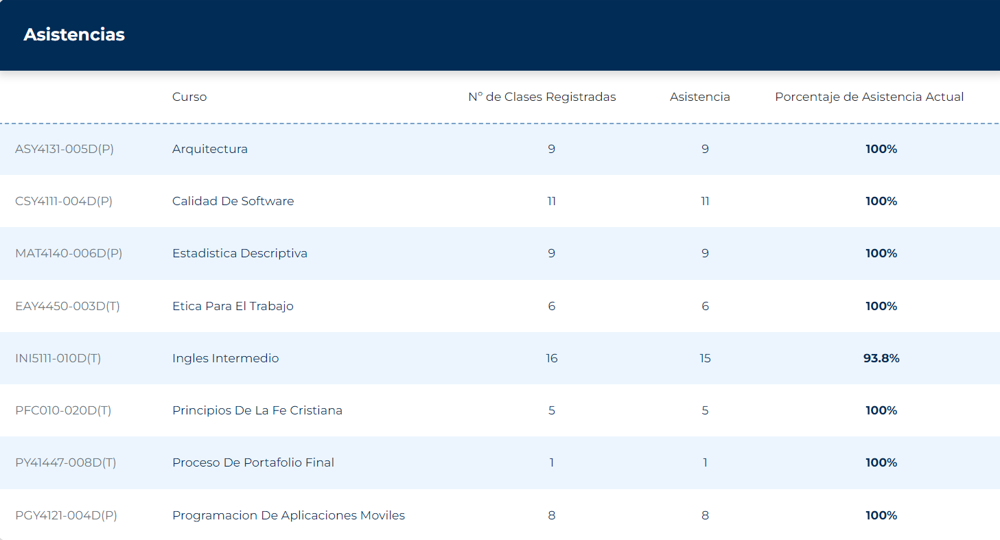

<ion-header>
  <app-cabecera></app-cabecera>
</ion-header>
<ion-content [fullscreen]="true" class="fondo">
  <div style="margin: 10px; background-color: solid black;">
    
  </div>
</ion-content>
<ion-footer>
  <app-pie></app-pie>
</ion-footer>